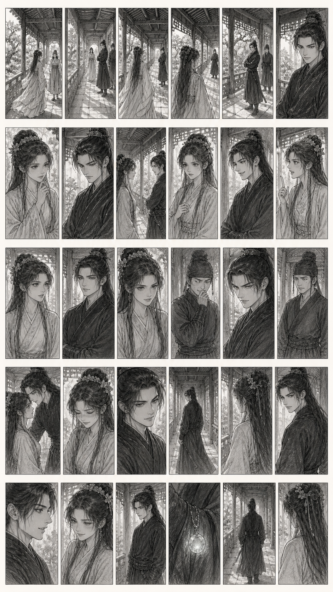
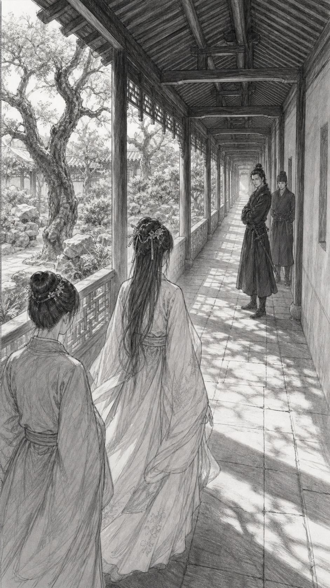

第5集《活阎罗谢临舟（下）》｜导演分镜表 + Image 2.0草图 + 人物关系位置图


9:16 Image 2.0草图；参考回廊正反视角；图内不放文字。
设备/镜头Cooke S7/i 24mm｜f/4.0
景别全景
拍摄视角御花园回廊纵深正侧拍，苏明舒从花园方向走入，谢临舟站在回廊内侧
运镜稳定器缓慢跟随苏明舒进入回廊
站位调度苏明舒顺着熟悉气息走向回廊，青枝跟在她侧后方；谢临舟站在回廊柱旁，石墩在他侧后方。
布光白天自然光从回廊外侧斜射进来，人物面部用柔光板补亮，回廊内侧略冷，形成女主暖光与男主冷调对比
画面+台词+声音苏明舒顺着那股熟悉气息走到御花园回廊，脚步不急不慢。谢临舟站在那里，像是早就等着她。[环境声：回廊风声、远处宫宴人声渐弱、衣摆轻响]
转场硬切开场
9:16 Image 2.0草图；参考回廊正反视角；图内不放文字。
设备/镜头Cooke S7/i 50mm｜f/2.2
景别中近景
拍摄视角苏明舒侧前方，谢临舟在前方虚化
运镜轻微推近苏明舒打量动作
站位调度苏明舒停在谢临舟面前几步处，上下打量他，青枝站在苏明舒侧后，谢临舟保持站立不动。
布光苏明舒面部柔光明亮，背景回廊略虚，突出她试探又好奇的表情
画面+台词+声音苏明舒上下打量谢临舟，眼神从玄色衣襟扫到他冷淡的脸，苏明舒：你就是谢临舟？[环境声：风吹回廊木帘轻响]
转场正反打切换
9:16 Image 2.0草图；参考回廊正反视角；图内不放文字。
设备/镜头Cooke S7/i 65mm｜f/1.8
景别近景
拍摄视角谢临舟正面平视，苏明舒肩部虚化在前景
运镜极慢推近谢临舟冷淡表情
站位调度谢临舟面对苏明舒站定，石墩在他侧后方安静观察。
布光谢临舟面部冷调柔光，眼神处加微弱高光，玄衣压暗，突出冷峻气场
画面+台词+声音谢临舟神色不动，目光落在苏明舒脸上，谢临舟：你就是苏明舒？[环境声：远处鸟鸣、回廊脚步声渐停]
转场正反打切换
9:16 Image 2.0草图；参考回廊正反视角；图内不放文字。
设备/镜头Cooke S7/i 50mm｜f/2.0
景别中近景
拍摄视角双人侧拍，苏明舒与谢临舟形成对峙构图
运镜固定镜头，靠两人台词节奏推进
站位调度苏明舒站在谢临舟对面，青枝在苏明舒侧后，石墩在谢临舟侧后，四人位置形成清晰对称。
布光两人面部柔光平衡，谢临舟一侧略冷，苏明舒一侧略暖，突出互相试探感
画面+台词+声音苏明舒笑眯眯地开口，苏明舒：谢大人方才帮我说话，我是不是该道谢？谢临舟冷淡接住，谢临舟：不用。我不是帮你，只是看蠢货不顺眼。[环境声：回廊风声轻轻掠过]
转场正反打切换
9:16 Image 2.0草图；参考回廊正反视角；图内不放文字。
设备/镜头Cooke S7/i 65mm｜f/1.8
景别近景
拍摄视角苏明舒正面平视，谢临舟肩部虚化在前景边缘
运镜轻微推近苏明舒笑容
站位调度苏明舒仍站在谢临舟对面，视线稳定落在他身上，青枝在侧后暗暗听着。
布光苏明舒面部高柔光，眼神光清亮，突出她软萌外表下的接话能力
画面+台词+声音苏明舒笑意不减，苏明舒：那谢大人平日一定很忙。谢临舟目光微微一停，谢临舟：苏小姐这是在拐着弯骂人？[环境声：青枝衣袖轻动声]
转场正反打切换
9:16 Image 2.0草图；参考回廊正反视角；图内不放文字。
设备/镜头Cooke S7/i 50mm｜f/2.2
景别中近景
拍摄视角双人正侧拍，苏明舒微微偏头，谢临舟保持冷脸
运镜缓慢横移，带出两人距离
站位调度苏明舒和谢临舟保持原有对面距离，石墩在谢临舟身后低头憋笑，青枝站在苏明舒侧后观察。
布光自然光柔和铺面，谢临舟侧脸保留冷调阴影，苏明舒面部明亮
画面+台词+声音苏明舒语气无辜，苏明舒：没有呀，我是在心疼谢大人公务繁重。谢临舟唇角几不可察地动了一下。[环境声：石墩轻轻憋气声、风过回廊声]
转场动作连续剪辑
9:16 Image 2.0草图；参考回廊正反视角；图内不放文字。
设备/镜头Cooke S7/i 85mm｜f/1.8
景别特写
拍摄视角苏明舒眼神特写，视线从谢临舟脸移到胸口
运镜小幅下摇跟随视线落点
站位调度苏明舒站在原位，视线从谢临舟脸上慢慢落到他胸口衣襟处。
布光苏明舒眼神处加自然高光，背景虚化，谢临舟胸口位置保留一点暗部层次
画面+台词+声音苏明舒目光落在谢临舟胸口，笑意里多了几分试探，苏明舒：不过，谢大人怀里好像藏了什么东西。[环境声：回廊瞬间安静一点]
转场细节视线切换
9:16 Image 2.0草图；参考回廊正反视角；图内不放文字。
设备/镜头Cooke S7/i 65mm｜f/1.8
景别近景
拍摄视角谢临舟正面，苏明舒虚化在前景
运镜极慢推近谢临舟反问表情
站位调度谢临舟面对苏明舒站定，胸口衣襟位置被苏明舒视线锁定，他没有后退。
布光谢临舟面部冷调柔光，胸口处保持自然阴影，不提前暴露锁灵玉
画面+台词+声音谢临舟低眼看她，语气冷淡又带刺，谢临舟：苏小姐第一次见面，就盯着男子胸口看，国师府这样教礼数？[环境声：石墩轻吸一口气]
转场正反打切换
9:16 Image 2.0草图；参考回廊正反视角；图内不放文字。
设备/镜头Cooke S7/i 65mm｜f/1.8
景别近景
拍摄视角苏明舒正面，谢临舟肩部虚化在前景
运镜轻微推近苏明舒反击表情
站位调度苏明舒面对谢临舟，微微抬眼，青枝在她侧后紧张看向谢临舟。
布光苏明舒面部柔光明亮，眼神处高光自然，突出她无辜又机灵的反击
画面+台词+声音苏明舒笑得很乖，苏明舒：谢大人误会了。我只是想看看，你怀里是不是藏了赃物。谢临舟眼神微动，谢临舟：若是呢？[环境声：风声轻轻穿过回廊]
转场正反打切换
9:16 Image 2.0草图；参考回廊正反视角；图内不放文字。
设备/镜头Cooke S7/i 50mm｜f/2.0
景别中近景
拍摄视角双人正侧拍，苏明舒与谢临舟保持对峙
运镜固定镜头，靠台词包袱完成喜剧点
站位调度苏明舒站在谢临舟对面，谢临舟不动，石墩在谢临舟身后低头憋笑。
布光双人柔光均衡，背景回廊虚化，突出对话节奏
画面+台词+声音苏明舒立刻接话，苏明舒：那我报官。谢临舟不紧不慢，谢临舟：我就是官。[环境声：石墩憋笑声险些漏出]
转场正反打切换
9:16 Image 2.0草图；参考回廊正反视角；图内不放文字。
设备/镜头Cooke S7/i 50mm｜f/2.2
景别中近景
拍摄视角苏明舒侧前方，石墩在后景低头憋笑
运镜轻微横移，带到石墩反应
站位调度苏明舒面对谢临舟，石墩站在谢临舟侧后方，因两人对话低头憋笑。
布光苏明舒面部柔光，石墩后景略虚但表情可见，突出轻喜剧反应
画面+台词+声音苏明舒点点头，语气特别认真，苏明舒：那正好，自首方便。石墩低头憋笑，肩膀轻轻一抖。[环境声：石墩憋笑气声]
转场反应镜头切换
9:16 Image 2.0草图；参考回廊正反视角；图内不放文字。
设备/镜头Cooke S7/i 65mm｜f/2.0
景别近景
拍摄视角谢临舟侧前方，视线扫向石墩
运镜小幅横移跟随谢临舟眼神
站位调度谢临舟站在苏明舒对面，忽然侧眼看向身后的石墩，石墩立即收住表情。
布光谢临舟侧脸冷光勾勒轮廓，石墩后景柔化，突出压迫感
画面+台词+声音谢临舟冷冷看石墩一眼，石墩立刻闭嘴，连肩膀都僵住。[环境声：石墩吞咽声、回廊风声]
转场反应镜头切换
9:16 Image 2.0草图；参考回廊正反视角；图内不放文字。
设备/镜头Cooke S7/i 50mm｜f/2.0
景别中近景
拍摄视角双人侧拍，谢临舟微微俯身靠近苏明舒
运镜缓慢推近两人距离变化
站位调度谢临舟从原位微微俯身靠近苏明舒，苏明舒没有后退，只是抬眼看他，两人距离明显缩短。
布光两人面部一冷一暖，回廊外侧自然光勾出轮廓，突出暧昧拉扯感
画面+台词+声音谢临舟微微俯身，声音压低，谢临舟：苏小姐这么想看，婚后更合礼数。苏明舒眼神一顿。[环境声：周围瞬间安静、衣料细微摩擦声]
转场动作连续剪辑
9:16 Image 2.0草图；参考回廊正反视角；图内不放文字。
设备/镜头Cooke S7/i 85mm｜f/1.8
景别特写
拍摄视角苏明舒脸部特写，耳尖泛红
运镜极慢推近苏明舒耳尖与表情
站位调度苏明舒面对谢临舟站着，因他突然靠近，耳尖微微发红，视线短暂闪避。
布光苏明舒面部柔光细腻，耳尖处保留自然肤色变化，避免油光和过度磨皮
画面+台词+声音苏明舒耳尖一红，立刻反驳，苏明舒：谁要婚后看？谢临舟低眼看她，谢临舟：你脸红什么？[环境声：青枝轻轻吸气声]
转场正反打切换
9:16 Image 2.0草图；参考回廊正反视角；图内不放文字。
设备/镜头Cooke S7/i 65mm｜f/1.8
景别近景
拍摄视角双人正侧拍，苏明舒努力镇定，谢临舟微微垂眼
运镜固定镜头，靠台词节奏完成暧昧笑点
站位调度谢临舟仍保持微微靠近姿态，苏明舒站在原位，青枝在侧后悄悄看两人反应。
布光苏明舒一侧暖光柔和，谢临舟一侧冷光克制，形成暧昧对比
画面+台词+声音苏明舒强作镇定，苏明舒：风吹的。谢临舟看了眼无风的回廊，谢临舟：嗯，风挺会挑人吹。[环境声：回廊安静，只有极轻风声]
转场笑点收束切换
9:16 Image 2.0草图；参考回廊正反视角；图内不放文字。
设备/镜头Cooke S7/i 35mm｜f/2.8
景别中景
拍摄视角回廊侧拍，谢临舟转身离开
运镜稳定器轻跟谢临舟转身动作
站位调度谢临舟收回靠近的身体，转身离开回廊，石墩跟在他侧后，苏明舒站在原地看着他背影。
布光回廊尽头冷暖交界，谢临舟玄衣有冷光轮廓，苏明舒停在暖光处
画面+台词+声音谢临舟转身离开，苏明舒站在原地，脸上的红意还没完全退下。[环境声：谢临舟脚步声、衣摆轻响]
转场动作连续剪辑
9:16 Image 2.0草图；参考回廊正反视角；图内不放文字。
设备/镜头Cooke S7/i 50mm｜f/2.2
景别中近景
拍摄视角谢临舟背侧，停下回头半侧脸
运镜轻微推近谢临舟停步动作
站位调度谢临舟走出两步后停下，微微侧头看向苏明舒，石墩停在他身后。
布光谢临舟侧脸冷光勾勒轮廓，背后回廊虚化，突出他突然停步的钩子
画面+台词+声音谢临舟走出两步，又停下，谢临舟：苏小姐。苏明舒抬眼看向他。[环境声：脚步声停住、衣摆轻落声]
转场动作停顿切换
9:16 Image 2.0草图；参考回廊正反视角；图内不放文字。
设备/镜头Cooke S7/i 65mm｜f/1.8
景别近景
拍摄视角苏明舒正面，视线抬向谢临舟
运镜轻微推近苏明舒疑惑表情
站位调度苏明舒站在回廊原位，青枝在她侧后，二人同时看向谢临舟。
布光苏明舒面部柔光自然，眼神处有清晰高光，突出她被叫住后的反应
画面+台词+声音苏明舒抬眼，刚才的窘意被好奇压下，安静等谢临舟继续说。[环境声：回廊风声、远处宫宴声很淡]
转场视线匹配剪辑
9:16 Image 2.0草图；参考回廊正反视角；图内不放文字。
设备/镜头Cooke S7/i 65mm｜f/1.8
景别近景
拍摄视角谢临舟半侧脸，苏明舒方向虚化在前景
运镜极慢推近谢临舟
站位调度谢临舟走出两步后停下，半侧回头看向苏明舒，石墩停在他身后；苏明舒站在回廊暖光处抬眼回应。
布光谢临舟侧脸用冷调轮廓光，回廊纵深压暗；远处苏明舒保留暖光虚化，突出回头补刀的钩子。
画面+台词+声音谢临舟：机关不错。苏明舒挑眉。谢临舟补一句：就是火候差点。[环境声：脚步声停住、风过回廊]
转场正反打切换
9:16 Image 2.0草图；参考回廊正反视角；图内不放文字。
设备/镜头ARRI Alexa Mini LF｜9:16竖画幅｜Cooke S7/i 65mm｜f/1.8
景别近景
拍摄视角苏明舒正面平视，谢临舟背影虚化在前景边缘
运镜缓慢推近苏明舒温柔笑容
站位调度苏明舒面对谢临舟，眼底闪过一点不服气，笑容却越来越温柔。
布光苏明舒面部暖光柔和，眼神亮度清晰，突出“笑得越温柔越危险”的轻喜剧质感
画面+台词+声音苏明舒笑了，笑得温柔极了，苏明舒：谢大人放心。下次一定让您尝到刚刚好的火候。[环境声：青枝轻轻屏息声]
转场正反打切换
9:16 Image 2.0草图；参考回廊正反视角；图内不放文字。
设备/镜头ARRI Alexa Mini LF｜9:16竖画幅｜Cooke S7/i 50mm｜f/2.0
景别中近景
拍摄视角谢临舟侧前方，苏明舒在远处虚化
运镜轻微后拉，带出回廊纵深
站位调度谢临舟站在回廊中段，侧身看着苏明舒，石墩站在他身后。
布光谢临舟冷调侧光稳定，背景苏明舒暖色虚化，形成互相拉扯的空间感
画面+台词+声音谢临舟看着她，语气平静，谢临舟：我等着。[环境声：回廊风声、远处人声渐远]
转场情绪反应切换
9:16 Image 2.0草图；参考回廊正反视角；图内不放文字。
设备/镜头ARRI Alexa Mini LF｜9:16竖画幅｜Cooke S7/i 85mm｜f/2.0
景别特写
拍摄视角谢临舟袖中手部特写，锁灵玉微光从袖内透出
运镜缓慢推近袖中微光
站位调度谢临舟转身继续离开，袖中锁灵玉在他手边微微发光。
布光袖内加微弱玉色内发光，周围压暗，突出锁灵玉异动，手部质感自然清晰
画面+台词+声音镜头切到谢临舟袖中，锁灵玉微微发光。[SFX：极轻玉鸣声、衣袖摩擦声]
转场细节特写切换
9:16 Image 2.0草图；参考回廊正反视角；图内不放文字。
设备/镜头ARRI Alexa Mini LF｜9:16竖画幅｜Cooke S7/i 85mm｜f/1.8
景别近景
拍摄视角谢临舟侧脸特写，声音压低
运镜极慢推近谢临舟眼神
站位调度谢临舟背对苏明舒走出几步，侧脸微微低下，视线落向袖中锁灵玉。
布光谢临舟侧脸冷光勾勒眉骨，背景虚化，突出他隐藏身份的深意
画面+台词+声音谢临舟低声，谢临舟：脾气倒和小时候一样。[环境声：回廊风声变轻、远处宫宴声虚化]
转场情绪钩子切换
9:16 Image 2.0草图；参考回廊正反视角；图内不放文字。
设备/镜头ARRI Alexa Mini LF｜9:16竖画幅｜Cooke S7/i 35mm｜f/2.8
景别全景
拍摄视角回廊纵深背后跟拍，谢临舟与石墩离开，苏明舒停在远处
运镜稳定器缓慢后拉后停住
站位调度谢临舟带着石墩沿回廊离开，苏明舒站在原地望着他的背影，青枝在她侧后看向她。
布光回廊尽头冷光渐深，苏明舒所在位置保留暖光，形成两人命运线索的冷暖分离
画面+台词+声音谢临舟和石墩走向回廊深处，苏明舒远远看着他的背影，若有所思。[环境声：脚步声渐远、衣摆轻响、风过回廊]
转场淡出转场 / 入下集